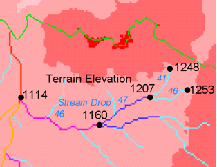

Stream Drop Analysis
(c) 2010 by David G. Tarboton
Applies a series of thresholds (determined from
the input parameters) to the input accumulated stream source grid (*ssa)
grid and outputs the results in the *drp.txt file the stream drop statistics
table. This function is designed to aid in the determination of a geomorphologically
objective threshold to be used to delineate streams. Drop Analysis attempts
to select the right threshold automatically by evaluating a stream network
for a range of thresholds and examining the constant drop property of the
resulting Strahler streams. Basically it asks the question: Is the mean
stream drop for first order streams statistically different from the mean
stream drop for higher order streams, using a T-test. Stream drop is the
difference in elevation from the beginning to the end of a stream defined
as the sequence of links of the same stream order. If the T-test shows a
significant difference then the stream network does not obey this "law"
so a larger threshold needs to be chosen. The smallest threshold for which
the T-test does not show a significant difference gives the highest resolution
stream network that obeys the constant stream drop "law" from
geomorphology, and is the threshold chosen for the "objective"
or automatic mapping of streams from the DEM. This function can be used
in the development of stream network rasters, where the exact watershed
characteristic(s) that were accumulated in the accumulated stream source
grid vary based on the method being used to determine the stream network
raster.

The constant stream drop "law" was
identified by Broscoe (1959). For the science behind using this to determine
a stream delineation threshold, see Tarboton et al. (1991, 1992), Tarboton
and Ames (2001).
- Broscoe, A. J., (1959), "Quantitative analysis of longitudinal
stream profiles of small watersheds", Office of Naval Research, Project
NR 389-042, Technical Report No. 18, Department of Geology, Columbia
University, New York.
- Tarboton, D. G., R. L. Bras and I. Rodriguez-Iturbe, (1991), "On the
Extraction of Channel Networks from Digital Elevation Data", Hydrologic
Processes, 5(1): 81-100.
- Tarboton, D. G., R. L. Bras and I. Rodriguez-Iturbe, (1992), "A Physical
Basis for Drainage Density", Geomorphology, 5(1/2): 59-76.
- Tarboton, D. G. and D. P. Ames, (2001), "Advances in the mapping
of flow networks from digital elevation data", World Water and Environmental
Resources Congress, Orlando, Florida, May 20-24, ASCE, http://www.engineering.usu.edu/dtarb/asce2001.pdf.
Parameters
- Number of Processes
Integer
- The number of stripes that the domain will be divided into and the
number of MPI parallel processes that will be spawned to evaluate each
of the stripes.
- Pit Filled Elevation Grid
Raster Grid
- A grid of elevation values. This is usually the output of the "Pit
Remove" tool, in which case it is elevations with pits removed.
- D8 Flow Direction Grid
Raster Grid
- A grid of D8 flow directions which are defined, for each cell, as
the direction of the one of its eight adjacent or diagonal neighbors
with the steepest downward slope. This grid can be obtained as the
output of the "D8 Flow Directions" tool.
- D8 Contributing Area Grid
Raster Grid
- A grid of contributing area values for each cell that were calculated
using the D8 algorithm. The contributing area for a cell is the sum
of its own contribution plus the contribution from all upslope neighbors
that drain to it, measured as a number of cells or the sum of weight
loadings. This grid can be obtained as the output of the "D8
Contributing Area" tool. This grid is used in the evaluation of
drainage density reported in the stream drop table.
- Accumulated Stream Source Grid
Raster Grid
- This grid must be monotonically increasing along the downslope D8
flow directions. It it compared to a series of thresholds to determine
the beginning of the streams. It is often generated by accumulating some
characteristic or combination of characteristics of the watershed with
the "D8 Contributing Area" tool, or using the maximum option
of the "D8 Flow Path Extreme" tool. The exact method varies
depending on the algorithm being used.
- Outlets Shapefile
Point Shapefile
- A point shapefile defining the outlets upstream of which drop
analysis is performed.
- Minimum Threshold
Double
- This parameter is the lowest end of the range searched for possible
threshold values using drop analysis. This technique looks for the smallest
threshold in the range where the absolute value of the t-statistic is
less than 2. For the science behind the drop analysis see Tarboton et
al. (1991, 1992), Tarboton and Ames (2001). Default value 5.
- Maximum Threshold
Double
- This parameter is the highest end of the range searched for possible
threshold values using drop analysis. This technique looks for the smallest
threshold in the range where the absolute value of the t-statistic is
less than 2. For the science behind the drop analysis see Tarboton et
al. (1991, 1992), Tarboton and Ames (2001). Default value 500.
- Number of Threshold Values
Double
- The parameter is the number of steps to divide the search range
into when looking for possible threshold values using drop analysis.
This technique looks for the smallest threshold in the range where
the absolute value of the t-statistic is less than 2. For the science
behind the drop analysis see Tarboton et al. (1991, 1992), Tarboton
and Ames (2001). Default value 10.
- Spacing for Threshold Values
Choice
- This parameter indicates whether logarithmic or linear spacing
should be used when looking for possible threshold values using drop
ananlysis. Default is Logarithmic.
Outputs
- D-Infinity Drop to Stream Grid
Text file (CSV)
- This is a comma delimited text file with the following header line:
Threshold,DrainDen,NoFirstOrd,NoHighOrd,MeanDFirstOrd,MeanDHighOrd,StdDevFirstOrd,StdDevHighOrd,T
The file then contains one line of data for each threshold value examined,
and then a summary line that indicates the optimum threshold value.
This technique looks for the smallest threshold in the range where the
absolute value of the t-statistic is less than 2. For the science behind
the drop analysis, see Tarboton et al. (1991, 1992), Tarboton and Ames (2001).